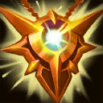
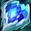
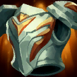

Principe du jeu
Teamfight Tactics est un jeu de combat JcJ au tour par tour où vous sélectionnez une équipe qui se battra automatiquement en votre nom sur un plateau composé de cases. Les individus s'affrontent en duel jusqu'à ce qu'il ne reste qu'un seul joueur. Vous gagnez en sélectionnant la meilleure équipe de champions dans une réserve commune, en les équipant d'objets puissants, en gérant vos revenus en or pour acheter la concurrence et en plaçant votre équipe en formations gagnantes. Il y a un nombre de stratégies gagnantes illimitées, vous devrez donc vous adapter à différentes situations dans chaque partie pour avoir le dessus.
Les champions, classes et origines
Dans le jeu, divers champions issus de League of Legends peuvent être achetés par le joueur pour créer son équipe. Ces champions possèdent des classes et origines en fonction de leur rôle dans League of Legends et de leur histoire, voire même du skin du champion qui a été implémenté dans TeamFightTactics
Les classes, comme les origines confèrent des bonus à l'équipe du joueurs, devenant plus puissant en fonction du nombre de champions issus d'une même classe ou origine. Ainsi une stratégie efficace peut être de se concentrer sur une classe ou origine pour profiter de puissants bonus. Attention cependant, si plusieurs personnes se concentrent sur la même classe ou origine, la stratégie peut devenir risquée, le stock de champions achetables étant commun à tous les joueurs !
Voici les classes et origines du set Gadget en folie qui est le set actuel :
Classes :
| Assassin | Les Assassins sautent vers la dernière ligne adverse au début du combat. De plus, leurs compétences infligents des critiques et leur chances et dégats critiques sont améliorées. |
|---|---|
| Innovateur | Les champions Innovateurs construisent un compagnon mécanique qui rejoint la bataille. |
| Arcaniste | Les Arcanistes augmentent la puissance de votre équipe. |
| Sniper | Les Snipers infligent un pourcentage de dégâts bonus par cases qui les séparent de leur cible. |
| Challenger | Les Challengers gagnent en vitesse d'attaque. De plus, ils se jettent sur un cible à chaque participation à une élimination et le bonus est doublé pendant 2,5 secondes. |
| Enchanteur | Tous les alliés gagnent un bonus de résistance magique et les Enchanteurs gagnent un bonus en pourcentage sur leurs soins et leurs boucliers. |
| Répétireur | Les attaques des Répétireurs infligent des dégats améliorés et ont une probabilité d'attaquer deux fois au lieu d'une. |
| Garde du corps | Les Gardes du corps ont un bonus d'armure. Peu après le début du combat, ils provoquent les ennemis autour d'eux, les forçant à les attaquer. |
| Combattant | Votre équipe gagne des PV bonus. Les Combattants gagnent le double de ce bonus. |
| Protecteur | Les Protecteurs gagnent un bouclier à hauteur d'un certain pourcentage de leurs PV max pendant 6 secondes lorsqu'ils lancent un sort. |
| Érudit | Votre équipe gagne du mana toutes les 2 secondes. |
Origines :
| Mercenaire | Vous avez un coffre au trésor qui s'ouvre lorsque vous remportez un combat contre un joueur dont le contenu s'améliore au fil du temps si vous ne l'ouvrez pas. |
|---|---|
| Impérial | Au début du combat, l'Impérial qui a infligé le plus de dégâts au combat précédent devient le Tyran et voit ses statistiques améliorées. |
| Yordle | Après chaque combat contre un joueur, un Yordle aléatoire est ajouté à votre banc de champions gratuitement. De plus, à 6 Yordles, leurs sorts coûtent 20% moins de mana. |
| Étudiant | Les étudiants combattent avec un bonus de dégâts et de puissance. De plus, à chaque sort lancé par un allié, leur puissance augmente. |
| Techno-Chimiste | Lorsqu'ils tombent sous la barre des 75 % PV, les Techno-Chimistes gagnent un puissant bonus en statistiques pendant une durée dépendant du nombre de Techno-Chimistes possédés. |
| Mécanique | Votre équipe gagne en vitesse d'attaque. |
| Colosse | Les Colosses sont plus grands, plus puissants et immunisés aux effets de contrôle. Néanmoins, chaque Colosse recquiert deux places dans l'équipe. |
| Justicier | Les Justiciers emprisonnent des ennemis au début du combat. Les ennemis emprisonnés se libèrent après 4 secondes, ou après avoir perdu 30 % de leurs PV max. |
| Mutant | Les Mutants ont des effets différents à chaque partie. |
| Ferrailleur | Au début du combat, certains objets de bases tenus par les champions se transforment en objets complets. De plus, votre équipe gagne également un bouclier en fonction du nombre d'objets de base équipés. |
| Pègre | Certains alliés sont cachés dans les ombres, gagnant 50 armure et résistance magique et 25 % d'omnivampirisme. |
| Vedette | Les Vedettes révèlent une case sur le champ de bataille. L'unité qui se tient dans cette case gagne des bonus au début du combat. |
Les objets
Dans le jeu, il existe différents objets que vous pouvez équiper à vos champions. Il en existe 9 qui servent de base pour créer d'autres objets plus puissants en combinant deux objets de base. Ces objets augmentent les statistiques des champions auxuqles ils sont équipés et leur donnent des capacités spéciales.
Voici les objets de base, vous pouvez cliquer dessus pour voir les combinaisons liées à un ou plusieurs objet en particulier :
Combinaisons d'objets :
| Icone | Nom | Description | Combinaison |
|---|---|---|---|
 | Lame funeste | Chaque fois que le porteur élimine un ennemi ou participe à une élimination, il gagne +15 dégâts d’attaque jusqu’à la fin du combat. Cet effet est cumulable à l’infini. |  + + |
 | Tueur de géants | Les compétences et les attaques du porteur infligent 20% de dégâts supplémentaires. Si la cible a plus de 1800.0 PV max, le bonus augmente à 60%. | +  |
 | Pistolame Hextech | Les dégâts magiques et bruts de la compétence du porteur lui rendent des PV équivalents à 33% des dégâts infligés. Le porteur rend aussi le même montant à l'allié dont les PV sont les plus bas. | +  |
 | Lame d'infini | Octroie +75% de chances de coup critique (en incluant les composants) et +10% de dégâts de coup critique. À partir de 100% de chances de coup critique, le porteur gagne +1% de dégâts de coup critique tous les 1% supplémentaires. | + |
 | Lance de Shojin | Les attaques du porteur lui rendent 8.0 pts de mana supplémentaires. | +  |
 | Blason de Zeke | Au début du combat, le porteur et tous les alliés dans un rayon de 1.0 hexagone à sa gauche et à sa droite gagnent +30% de vitesse d'attaque jusqu'à la fin du combat. | +  |
 | Ange gardien | Empêche la première mort du porteur en le mettant en stase. Après 2.0 sec de stase, le porteur revient avec 400.0 PV et est débarrassé des effets négatifs qui l'affectaient. | +  |
 | Soif-de-sang | Le porteur récupère des PV équivalents à 33% des dégâts physiques qu'il inflige. Quand il tombe sous 40% de ses PV, le porteur gagne un bouclier de 30% de ses PV max qui dure jusqu'à 5.0 sec. | + |
 | Emblème d'Imperial | Le porteur devient aussi un Impérial. | +  |
 | Canon ultrarapide | Augmente la portée d'attaque du porteur de 1.0 hexagone et lui octroie +50% de vitesse d'attaque bonus (en incluant les composants). Les attaques du porteur ne peuvent plus manquer leur cible. | + |
 | Lame enragée de Guinsoo | Jusqu'à la fin du combat, le porteur gagne +6% de vitesse d'attaque bonus à chacune de ses attaques. Cet effet est cumulable à l'infini. | + |
 | Dernier souffle | Quand le porteur inflige un coup critique, l'armure de sa cible est réduite de 70% pendant 5.0 sec. Cet effet n'est pas cumulable. | + |
 | Poignard de Statikk | Le porteur gagne +15% de vitesse d'attaque bonus. Toutes les 3 attaques, le porteur lance un éclair qui rebondit sur 4.0 ennemis, leur infligeant 70.0 pts de dégâts magiques et réduisant leur résistance magique de 50% pendant 5.0 sec. | + |
 | Portail de Zz'Rot | Au début du combat, le porteur provoque les ennemis dans un rayon de 4.0 hexagones. Quand le porteur meurt, une Engeance du Néant apparaît et provoque les ennemis proches. Les Engeances du Néant qui apparaissent via des unités invoquées sont 25% moins efficaces. | + |
 | Détermination du titan | Quand le porteur attaque ou subit des dégâts, il gagne +2.0 dégâts d'attaque et +2.0 puissance.Cet effet est cumulable 25.0 fois. Au maximum d'effets cumulés, le porteur gagne +25.0 armure et +25.0 résistance magique. | + |
 | Ouragan de Runaan | Le porteur gagne +10.0 dégâts d'attaque. Les attaques du porteur tirent un projectile sur un autre ennemi proche, infligeant des dégâts physiques équivalents à 75% des dégâts d'attaque du porteur. | + |
| Emblème de challenger | Le porteur devient aussi un Challenger. | + | |
 | Coiffe de Rabadon | Octroie +75.0 puissance bonus (en incluant les composants). | + |
 | Gantelet précieux | Les dégâts magiques et les dégâts bruts de la compétence du porteur peuvent infliger des coups critiques. Le porteur gagne +30% de dégâts de coup critique bonus et +10.0 puissance bonus. | + |
 | Bâton de l'Archange | Pendant le combat, le porteur gagne +25.0 puissance toutes les 5.0 sec. | + |
 | Morellonomicon | Quand le porteur inflige des dégâts magiques ou bruts avec sa compétence, il brûle sa cible, infligeant des dégâts bruts équivalents à 25% des PV max de la cible en 10.0 sec et réduisant de 50% les soins pendant cette durée. | + |
|  | Médaillon de l'Iron Solari | Au début du combat, le porteur et tous les alliés dans un rayon de 2.0 hexagones à sa gauche et à sa droite reçoivent un bouclier de 300/350/400 ★ PV pendant 8.0 sec. | + |
 | Etincelle Ionique | La résistance magique des ennemis dans un rayon de 2.0 hexagones est réduite de 50%. Quand ils lancent une compétence, ils sont foudroyés, ce qui leur inflige des dégâts magiques équivalents à 200% de leur mana max. | + |
 | Emblème d'Arcaniste | Le porteur devient aussi un Arcaniste. | + |
 | Gants de voleur | Au début de chaque phase de préparation, le porteur s'équipe de 2 objets temporaires. La puissance des objets temporaires augmente avec votre niveau de joueur. | + |
 | Main de la justice | Le porteur gagne les bonus suivants : - Augmentation de dégâts d'attaque et de puissance. - Ses attaques et ses compétences lui rendent des PV équivalents à 10% des dégâts infligés. Au début de chaque phase de préparation, l'un de ces bonus est augmenté. | + |
 | Griffe de la banshee | Au début du combat, le porteur et tous les alliés dans un rayon de 1.0 hexagone à sa gauche et à sa droite reçoivent un bouclier qui bloque les dégâts (600 pts max) et les effets infligés par la première compétence ennemie. | + |
 | Linceul d'apaisement | Au début du combat, le porteur tire un rayon droit devant, ce qui retarde la première compétence des ennemis touchés en augmentant leur mana max de 35% jusqu'au lancement de leur compétence. | + |
 | Mercure | Le porteur gagne +20% de vitesse d'attaque bonus. Le porteur est immunisé contre les contrôles de foule en combat pendant 15.0 sec. | + |
| Emblème d'Assassin | Le porteur devient aussi un Assassin. | + | |
 | Buff bleu | Le porteur gagne +30.0 pts de mana de départ (en incluant les composants). Après avoir lancé sa compétence, le porteur regagne 50.0 pts de mana. | + |
 | Rédemption | Toutes les 5.0 sec, le porteur diffuse un halo vers les alliés dans un rayon de 1.0 hexagone, ce qui leur rend 18% de leurs PV manquants. Pendant 5.0 sec, les compétences et attaques multicibles infligent 25% de dégâts en moins aux alliés affectés. | + |
|  | Coeur gelé | Réduit de 35% la vitesse d'attaque des ennemis dans un rayon de 2.0 hexagones. | + |
 | Calice de puissance | Au début du combat, le porteur et tous les alliés dans un rayon de 1.0 hexagone à sa gauche et à sa droite gagnent +30.0 puissance jusqu'à la fin du combat. | + |
 | Emblème d'Étudiant | Le porteur devient aussi un Étudiant. | + |
 | Armure de Warmog | Octroie Health +1000.0 PV bonus (en incluant les composants). | + |
| Cape solaire | Toutes les 2.5 sec, un ennemi aléatoire dans un rayon de 2.0 hexagones est brûlé, ce qui lui inflige des dégâts bruts équivalents à 20% de ses PV max en 8.0 sec. Tous les soins qu'il reçoit sont réduits de 50%. | + | |
 | Zéphyr | Au début du combat, le porteur invoque une tornade du côté opposé de l'arène ; l'ennemi le plus proche de la tornade est exclu du combat pendant 5.0 sec. Ignore l'immunité contre les contrôles de foule. | + |
| Emblème de Techno-Chimiste | Le porteur devient aussi un Techno-chimiste. | + | |
| Armure roncière | Octroie +70.0 armure bonus (en incluant les composants). Annule les dégâts supplémentaires des coups critiques qui frappent le porteur. Quand le porteur est touché par une attaque, il inflige 60/80/120 ★ pts de dégâts magiques à tous les ennemis proches (une fois toutes les 2.5 sec). | + | |
|  | Lithoplastron de Gargouille | Le porteur gagne +18.0 armure et +18.0 résistance magique pour chaque ennemi qui le cible. | + |
 | Emblème de la Pègre | Le porteur devient aussi un champion de la Pègre. | + |
 | Griffe de dragon | Octroie +200.0 résistance magique bonus (en incluant les composants). Quand une compétence lancée vous inflige des dégâts magiques ou bruts, vous lancez une boule de feu sur le lanceur de cette compétence, lui infligeant des dégâts magiques équivalents à 18% de ses PV max (0.5 sec de récupération). | + |
 | Emblème de Mutant | Le porteur devient aussi un Mutant. | + |
| Force de la Nature | La taille maximale de l'équipe du porteur augmente de 1.0. | + |